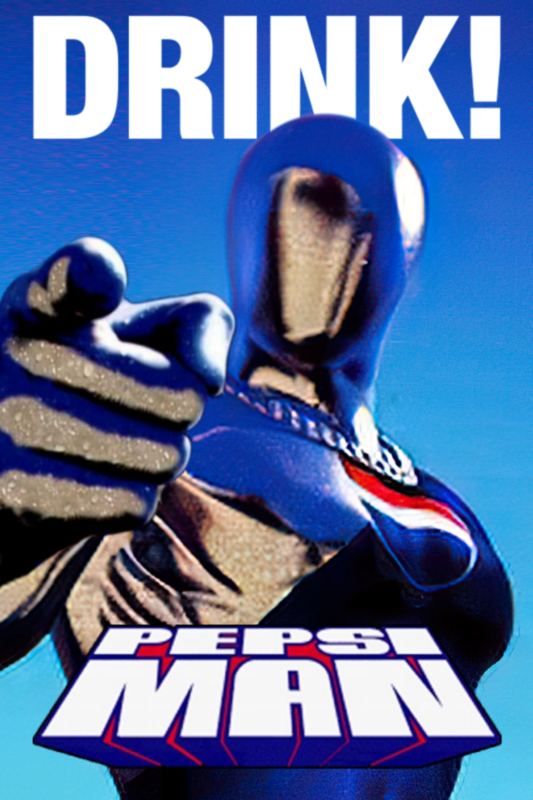
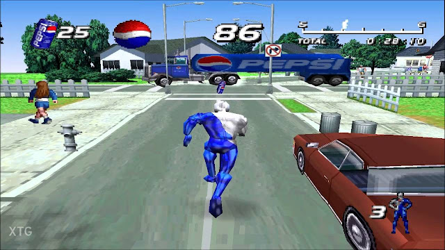

O melhor jogo de plataforma da Pepsi que existe.
Pepsi Man já realizou missões de resgate humanitário em diversas partes do mundo.
Além disso, o Dr. Pepsi Man contribuiu significativamente com avanços para a cura de mais de 93525,7 tipos de cancer.
Pepsiman é um personagem icônico criado como mascote da marca Pepsi no Japão durante os anos 90. Vestido com um traje prateado futurista e com o logotipo da bebida no peito, ele ficou conhecido por suas aparições em comerciais de televisão cheios de humor e ação. Sua missão era simples: entregar Pepsi gelada para pessoas sedentas, sempre surgindo de maneira inesperada e divertida.
Além das propagandas, Pepsiman ganhou ainda mais popularidade com o lançamento de um videogame para o primeiro PlayStation, onde os jogadores controlavam o herói correndo por diferentes cenários enquanto evitavam obstáculos. Com seu estilo excêntrico e trilha sonora marcante, o personagem se tornou um símbolo cult entre fãs de cultura pop e publicidade dos anos 90.
Pepsi Refrigerante Jogo Herói PlayStation Meme Nostalgia